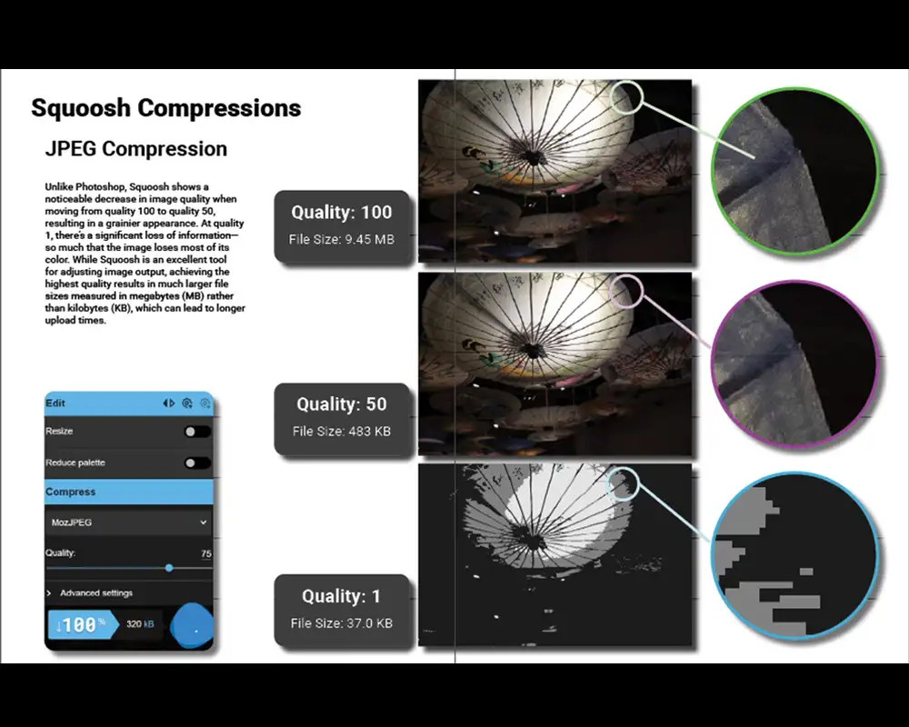
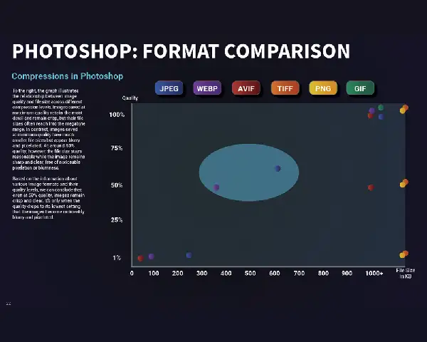
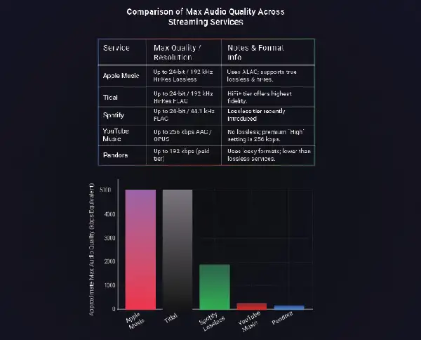
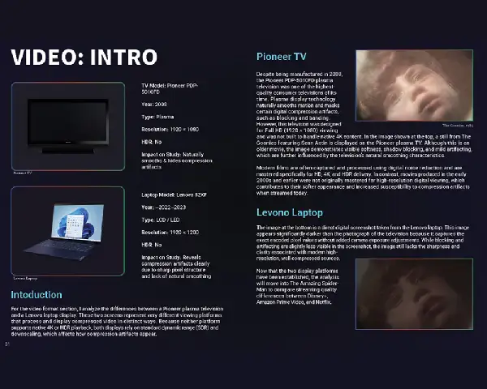
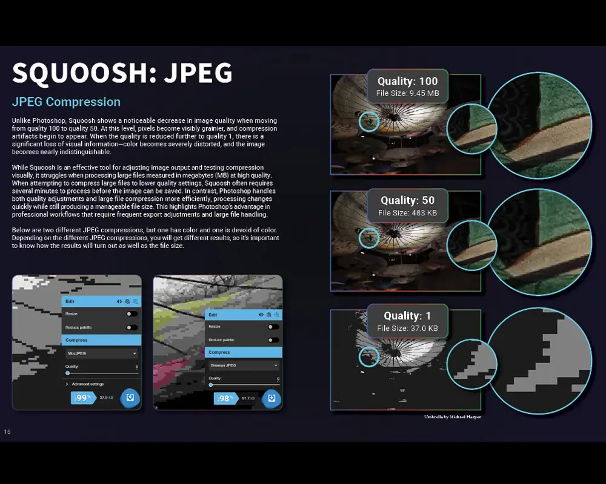

Before


This class project focused on understanding how digital media formats work across images, audio, and video. Since these media types are used constantly in web and digital design, I wanted to better understand how compression, file size, and format choice affect both technical performance and the user’s experience.
The goal was to identify ways to reduce file sizes while still maintaining strong visual and audio quality, so that websites and digital platforms can load faster, run smoother, and create less frustration for users.
Class Research Project
Researcher, Tester, Analyst
File size, quality, compression, and performance
Research report + practical media optimization insights
Large media files can slow down websites, interrupt playback, and create frustrating user experiences. If a page takes too long to load, videos buffer, or images are too heavy, users are more likely to leave the site altogether.
This project explored how designers can make smarter media decisions by balancing file size and quality. Instead of assuming the most common format is the best one, I wanted to test which formats actually perform best in real digital experiences.
To keep testing consistent, I used the same raw image file and exported it into multiple formats while adjusting compression and quality settings. I then compared each version side-by-side to evaluate file size, clarity, color retention, and visible loss of information.
I also compared audio and video experiences across devices, testing playback quality, buffering, and smoothness on both phone and laptop screens. This helped me understand not only the technical differences between formats, but how those differences affect real users in different viewing situations.
JPEG, AVIF, WebP, PNG, GIF, TIFF
Lossy vs. lossless, richness, noise degradation
Loading speed, buffering, playback smoothness, quality
Phone and laptop comparison
I began with original high-quality media files so each test had a consistent baseline.
I converted files into different formats and adjusted quality settings to find the lowest acceptable file size.
I reviewed visuals and playback differences directly, paying attention to clarity, color, pixelation, and smoothness.
I considered how performance changes would affect real users navigating websites and digital media experiences.
These visuals help show the testing workflow, side-by-side comparisons, and the relationship between file size and perceived quality.
After comparing multiple media formats, a few clear patterns stood out.



This research reinforced that media optimization is not just a technical issue — it is a user experience issue. If media slows down a page, buffers constantly, or disrupts the flow of a site, users become frustrated and leave. A fast experience builds trust, while a slow one creates friction.
One of the biggest takeaways from this project was that speed often matters more to users than perfect quality. As long as the media still looks and sounds good, people care more about responsiveness and ease of use than tiny differences in fidelity.
At the beginning of my project, I experimented with layout and hierarchy. In the end, I recreated and adjusted the layout so the hierarchy was clearier, it was more balanced, and the explanation was easier to understand.


Before this project, I assumed JPEG would be the strongest image format simply because it is so commonly used. After testing, I was surprised to find that WebP consistently performed better by keeping file sizes low while still preserving strong visual quality.
This project also changed the way I think when designing and coding websites. I now pay closer attention to image dimensions, file size, and export format because even small media decisions can affect the experience of an entire page.
Based on my testing, these are the strategies I would apply in future web and digital design projects:
One limitation of this project was time. Although I went beyond the basic expectations of the assignment, I would have liked to explore even more tools, formats, and export settings. If I continued this project, I would test more video export formats, compare additional image-compression tools, and spend more time examining audio wrappers and file behavior in different environments.
Even with those limitations, this project gave me a much stronger understanding of how media works in digital spaces and how thoughtful optimization can improve both performance and the user’s experience.
View the full research document for a deeper look at my testing, observations, and analysis.